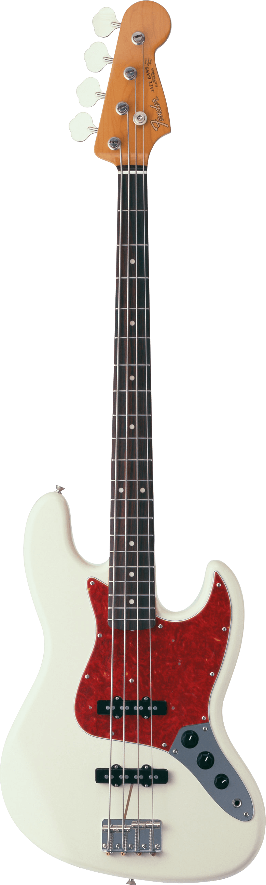

Types of guitars

Classical guitar:
This type of guitar has a wider neck and nylon strings, which produce a softer, more delicate sound. It is often used in classical and flamenco music.
Acoustic guitar:
This type of guitar is known for its rich, warm sound and is often used in folk, country, and classical music. It has a hollow body and is played without amplification.
Electric guitar:
This type of guitar uses pickups and amplifiers to produce a louder, brighter sound. It is often used in rock, blues, and jazz music.

Bass guitar:
This type of guitar has a longer neck and thicker strings, which produce a deep, rich tone. It is often used in rock, pop, and jazz music as a support for the melody and rhythm sections.